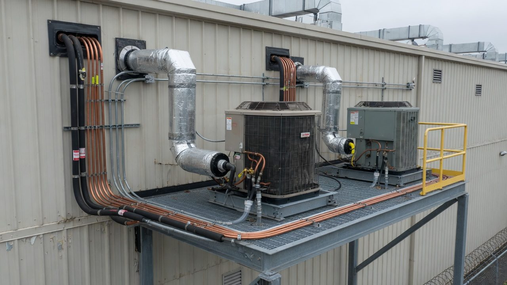
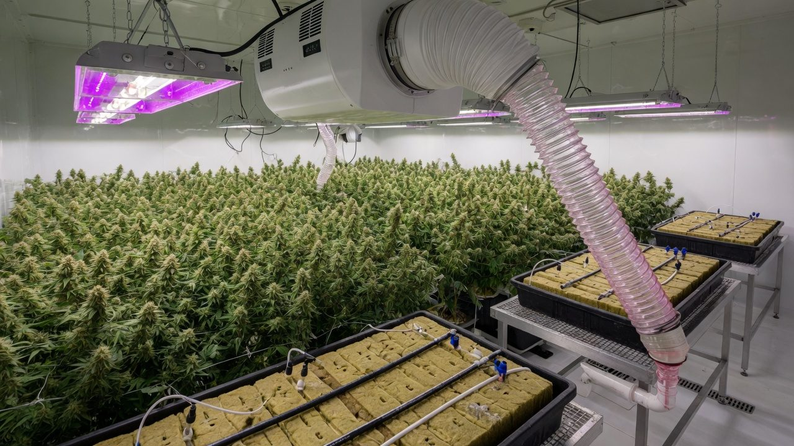
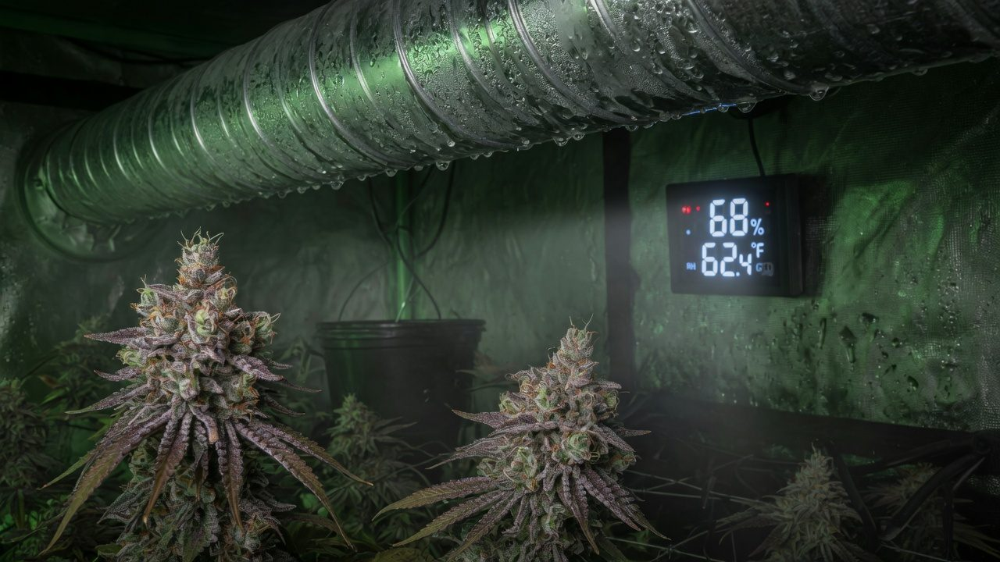
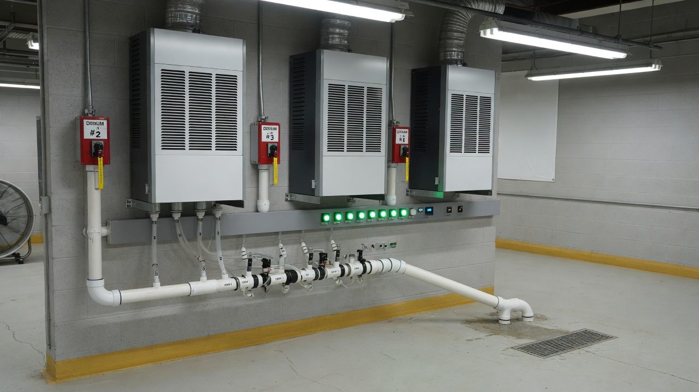

HVAC and dehumidification for grow rooms
Each watt that you put into a grow room becomes heat, and almost all the water that you apply becomes vapor. This paper shows how to calculate the two loads correctly and how to select equipment of the correct size. It shows how to control the humidity spike when the lights stop. It also shows how to prepare for a night when a unit does not operate.
Purpose and scope
A grow room is a system that changes electricity into light, light into plant growth, and water into vapor. Each grower calculates the energy cost of the lights. The lights are one half of the system. The climate system (cooling, heating and dehumidification) is the other half. It removes the heat and the water from the room, each hour of each day. It typically uses 30 to 60% of the energy cost of an indoor facility[1].
When the system has the correct size, you do not think about it. If you do not calculate the size, the result is a problem. For example, you select a mini-split from a BTU chart and a dehumidifier that looks large. You find the problem in week 6 of flowering, at 2 a.m. The room is cold and saturated, and Botrytis causes damage to the flowers.
This paper is for a person who selects the equipment for a first large room. It is also for a person who examines a quotation for mechanical equipment, to make sure that it is correct. It is not necessary to know about refrigeration. After you read this paper, you can calculate the loads for your room. You can examine the data sheet of a dehumidifier and make sure that its rating is correct for your conditions. You can also give the cause of the humidity of 85% when the lights go off.
1. Each watt that goes in becomes heat. In a sealed room with insulation, all of the electrical power of lights, fans, pumps and dehumidifiers becomes heat. The cooling system must remove this heat.
2. Each liter of water that goes in must go away from the room. Some of the water flows out as runoff through the drain. A small quantity stays in the plant tissue. The remaining water becomes vapor, and your equipment must condense this vapor to liquid again. To select the size of a climate system, you only count these watts and liters correctly.

Definitions
Evidence and limitations
We want each paper to be correct. Thus we examine each paper for information that is not solid. This information comes from the view of one grower, from a small number of sources, or from grower methods that have no controlled test. We identify this information, and we do not show it as solid.
Frequently there is no paper for the decision that you must make. Then we use the reports of other growers and the methods that work in the rooms that we know. This information can help you, but it is not the result of a laboratory test. Use the methods that work for your plants, for your room and for your meters. If a table does not agree with your crop, use the data from your crop and record the difference.
- The primary definitions and the units of measurement in the paper
- Safety limits that have a citation to a regulation or a specification
- Target ranges for light, climate and feed in each stage. They are start values that you can change.
- SOPs that work in many rooms, but you must adjust them for your genetics and meters
- A number for yield or potency that you will always get, with no test at many sites
- Controller setpoints from a different facility, with no new calibration
If you find an error, make a report. We will correct it. Make the report on GitHub, with the name of the paper and the information that is incorrect. If you have a source, include it: Make a report of an accuracy problem. The regulations, labels and licenses of your area always override each procedure in these papers. The label weak in a paper shows the points where the risk of an error is highest.
Sensible heat load and latent heat load
An air conditioner (AC) for comfort cooling in an office does one task: it removes dry heat. A grow room has two tasks: remove heat and remove water. Engineers divide the heat load into the sensible heat load (temperature) and the latent heat load (moisture). In a grow room, for much of the cycle, the latent heat load is as large as the sensible heat load, or larger. This ratio is not usual. Almost no equipment for comfort cooling has the correct capacity for it[2][4].
The source of the sensible heat load: almost all of it is from the lights. In a sealed room with insulation, almost all of the electrical power becomes heat that the cooling system must remove. Lighting is the largest part of this heat[2][3]. Dehumidifiers, fan motors, pumps and persons add the remaining heat.
The source of the latent heat load: the plants. A cannabis leaf has many small pores in its surface. These pores are the stomata. When the stomata are open in the light, the plant moves water up from the roots and releases it into the air as vapor. The water that the plant releases is not waste. Evaporation decreases the temperature of the leaf and moves more water (and dissolved nutrients) up from the root zone.
In transpiration, the plant continuously releases water vapor through the stomata, and the light causes it. Transpiration is the latent heat load. The plant moves approximately 95% or more of the water that you supply to the root zone out of the stomata as vapor. The engineering note of Desert Aire gives a value near 99% of the water that the roots absorb[2]. Facility engineers calculate with 80 to 95% of the total irrigation water that goes into the air again[7].
Your crop is part of the climate system. Your crop is the humidifier. It releases many liters of water each day. Your lights supply the energy, and the VPD controls the rate[5].
When water evaporates, it absorbs heat. A canopy that transpires is a very large evaporative cooler. Thus the air temperature increases less than the watts of the lights show.
A new grower can think that the heat is not a large problem. But the heat does not go away from the room. It moves into the vapor. The coil that condenses this vapor must remove the heat again. The total heat that you remove is always equal to the total watts that go in. The plants change only how much of the heat is sensible heat and how much is latent heat.
Calculate the heat loads of the room
All the examples from here use one room. Thus the numbers agree with each other. The room has 40 m² of flowering canopy (approximately 430 square feet), 10 × 700 W LED fixtures, two 800 W dehumidifiers, and approximately 500 W of circulation fans and pumps.
The room is sealed and has CO₂ enrichment, and the internal walls have insulation. Two persons are in the room. Replace these numbers with the numbers of your room. The method is the same.
| Load | Type | In the example room | Information |
|---|---|---|---|
| Grow lights | Sensible heat | 7.0 kW | The largest load. It increases when the installed power in W increases[3]. |
| Dehumidifiers | Sensible heat | 1.6 kW of electrical power + heat of condensation | The dehumidifiers operate mostly at night. They are the heater at night. |
| Fans, pumps, controls | Sensible heat | approximately 0.5 kW | Each item is small, but the total is not zero. |
| Persons | Sensible heat and latent heat | approximately 0.1 kW for each person | approximately 400 BTU/h for each person[6] |
| Envelope (walls and roof) | Sensible heat | approximately 0 (internal room with insulation) | The load is not zero in containers, sheds and top floors. Do not use zero for these. |
| Transpiration | Latent heat | approximately 175 L/day (next section) | Transpiration is the latent heat load[2]. |
| Media and wet surfaces | Latent heat | Small part | Water evaporates from the faces of slabs, from trays and from wet floors[2]. |
| External air | Sensible heat and latent heat | approximately 0 (sealed room) | In rooms with vents, external air with high humidity adds a latent heat load. |
A CO₂ burner that uses propane or natural gas adds heat and water. Combustion makes approximately 1.5 kg of water vapor for each kg of propane that burns. This vapor goes directly into the latent heat load. CO₂ from bottles or from a tank does not add heat or water. When you use burners, the sensible heat load is larger and the latent heat load is larger.

Water balance and dehumidification load
The most important fact for the size of the equipment is that the dehumidification load is the result of your irrigation schedule. The volume of the room and the number of plants do not give this load. The liters of water for each day give it. Water that goes in and does not flow out through the drain goes into the air[8][7].
- 1Count the water that goes in40 m² of canopy × 6 L/m²/day at the middle of flowering = 240 L/day. The irrigation controller records this number.
- 2Subtract the runoff that you collect25% runoff to the drain = 60 L. This water does not touch the air. 240 − 60 = 180 L/day stays in the room. (Runoff that stays in trays evaporates and becomes latent heat load again. Drain the runoff.)
- 3Subtract the water that the plant keepsPlant tissue holds only a small percentage of the water that the plant absorbs. Use 5 L/day. The remaining water transpires[2]. Approximately 175 L/day becomes vapor.
- 4Change to pints for the data sheet175 L ÷ 0.473 = approximately 370 US pints/day. The easy method of Quest (gallons that you apply minus gallons of runoff, times 8) gives the same result[8].
It is not necessary to make a model of the transpiration, because you measure it. The liters of water that go in (from the log of the controller) minus the liters of runoff (measure the runoff for one typical day) are the latent heat load for one day. Do this for each room and for each crop stage. These data are better than the estimate of a consultant, and you have them.
Record the load in each cycle. The record also shows when the crop uses a different quantity of water than usual. A different quantity of water is a signal of plant health, and not only a signal for the HVAC system.
Calculate the cooling load
Each forum tells you “3,000 to 4,000 BTU for each 1,000 W of light”. This number is not from horticulture. It is a change of units: 1 W of electricity always makes 3.412 BTU/h of heat, because of physics[6]. The forum number is approximately correct for the lights, but it does not include the other equipment. As a result, rooms have a cooling capacity that is 20 to 30% less than the correct capacity.
- 1List each watt in the roomLights 7,000 W. Dehumidifiers 1,600 W. Fans and pumps 500 W. Two persons approximately 240 W[6]. Heat from the envelope: approximately 0 here. It is not zero if your room has a hot roof or a wall in the sun.
- 2Add the values7,000 + 1,600 + 500 + 240 = approximately 9.3 kW of sensible heat load.
- 3Change to BTU/h and tons9.3 kW × 3,412 = approximately 31,700 BTU/h = approximately 2.6 tons of cooling.
- 4Add a marginA margin of 20 to 25% is for high external temperatures, dirty coils and capacity that becomes smaller with time[6]. Select approximately 11.6 kW (approximately 40,000 BTU/h, approximately 3.3 tons).
- 5Divide the capacity between unitsTwo smaller units are better than one large unit. They give capacity in stages for small loads. If one unit stops, half of the cooling continues to operate (Section 12).
- Rooms in which air flows through the lights and out to the external air. Some of the heat does not go into the room. As a result, the forum numbers give a capacity that is too large. (This condition is the source of the number “3 BTU/W for vented HPS”.)
- Spaces without insulation: containers, garages and top floors below hot roofs. The envelope load can add kilowatts that the forum numbers do not include.
- The load does not include the dehumidifiers. The dehumidifiers add their electrical power and they release the latent heat of each condensed liter as sensible heat. If the AC size does not include this heat, the AC can be too small in the afternoon.
- The cooling capacity is not the capacity for latent heat. A nameplate kW of cooling (the kW that the manufacturer gives) is the capacity for sensible heat and for latent heat together. The part that removes moisture changes if the coil temperature or the airflow changes. The next section shows how to calculate the capacity for moisture correctly.
Calculate the dehumidifier capacity
To calculate the dehumidifier capacity, start with the water balance from Section 05. Then make two corrections that most persons do not make. The first correction is for the time at which the moisture goes into the air. The second correction is for the quantity of moisture that the unit removes at your conditions, and not at the rating conditions of the unit.
- 1Start with the dehumidification loadExample room: approximately 175 L/day = approximately 370 pints/day in total.
- 2Divide the day and the nightTranspiration does not stop when the lights are off. The stomata close in part, and water continues to evaporate from the media. Use a ratio of 70/30 for the day and the night. The day has 122 L in 12 h (approximately 10 L/h), and the night has 53 L in 12 h (approximately 4.4 L/h). Compare the ratio with the condensate volumes of your room and correct it. The ratio changes with the cultivar and the night climate.
- 3The day loadWhen the lights are on, the AC coils condense some of the moisture during the cooling. The dehumidifiers remove the remaining moisture. This period is easy.
- 4Use the night load for the sizeWhen the lights are off, there is no sensible heat load, and the AC stops. The moisture that the AC removes during the cooling also stops[2]. Only the dehumidifiers remove moisture, and they must remove 4.4 L/h. This rate of removal is equal to 105 L/day.
- 5Correct the nameplate capacityManufacturers give the ratings at a warm temperature, usually 26.7 °C (80 °F) and 60% RH. Refrigerant units remove less water when the room becomes colder[10]. The curve from the manufacturer can show approximately ⅔ of the nameplate capacity at a night temperature of 19 °C (66 °F). Then approximately 160 L/day of nameplate capacity must be in operation to hold the night conditions. For example, use two 80 L/day units at maximum capacity.
- 6Then apply N+1If two units supply only the night capacity, a failure of one unit causes crop loss. Install three units of 80 L/day (or two units of 120 L/day). Then one unit can stop on a Saturday night without a problem (Section 12).
| Canopy | Water in (6 L/m²/day) | Vapor to remove | In pints |
|---|---|---|---|
| 10 m² (tent or small room) | 60 L/day | approximately 44 L/day | approximately 92 pints/day |
| 20 m² | 120 L/day | approximately 87 L/day | approximately 185 pints/day |
| 40 m² (example room) | 240 L/day | approximately 175 L/day | approximately 370 pints/day |
| 80 m² | 480 L/day | approximately 349 L/day | approximately 738 pints/day |
For each fixture, the example gives 17.5 L (approximately 37 pints) for each light each day. This number is easy to use, but it comes from the irrigation schedule and it is not a property of the light. The field guidance of Quest is 0.5 to 2 pints for each square foot of canopy each day[9]. The example room is in this range, with approximately 0.86 pints for each square foot. If an approximate number and your arithmetic agree, you can accept the arithmetic. If they do not agree, use the arithmetic.
The values above are for a sealed room with recirculating air. A sealed room with CO₂ enrichment is the usual room for flowering. A room with vents sends the moist air out and does not condense it.
Thus the necessary dehumidifier capacity is less, but the external climate has an effect on the room. In a summer with high humidity (Auckland in February, most of Queensland), the air that goes into the room can add latent heat load and not remove it. The capacity for a room with vents starts from the psychrometric data for your location, and not from this table.
Types of HVAC equipment
There are four types of cooling equipment. You add dehumidifiers to all of them. Engineers divide the equipment into the same types. At the lowest capital cost, the system is a packaged unit with direct-expansion (DX) cooling and room dehumidifiers. In the middle, the system is a DX unit with hot-gas reheat. For a large facility, the system uses chilled water[3].
A refrigerant line goes to a unit on the wall or on the ceiling. The capital cost is low, you can get the unit in all areas, and you can install it in one day. The unit is for cooling, and it removes moisture only as a secondary effect. The control is a wall thermostat with a tolerance of ±1 to 2 °C (±2 to 4 °F), and there is no reheat. Thus the unit decreases the temperature too much when it removes moisture. It is correct for rooms for vegetative growth, for drying rooms and for small flowering rooms with room dehumidifiers that remove the moisture.
One cabinet from the manufacturer is external to the envelope. It has ducts for supply air and return air. It has direct-expansion (DX) cooling and a high airflow. You can do the maintenance from an external area.
This type is standard for one room and for small facilities. Use dehumidifiers with it also. We recommend compressors with stages or inverter compressors, and not single-stage compressors[3].
A central chiller makes cold water. Pipe loops with insulation supply the water to fan coil units in each room. The system can supply many rooms, and the spare capacity is at the chillers (two chillers supply cooling to all of the facility). With hot-water coils or reheat coils, it can control the temperature and the humidity independently[3]. It must have a mechanical design. Engineers make this system for each facility, and you cannot select it from a list of units.
These cabinets are for grow rooms. One cabinet does the cooling, the dehumidification and the reheat in one controlled sequence. The size comes from the loads that you calculate, and the control uses the dew point. The manufacturer makes the cabinet for the problem at lights-off. The capital cost is high. This unit is best for flowering rooms and drying rooms with accurate control, where a climate error has a large cost[1].
Room dehumidifiers and ducted dehumidifiers. Room dehumidifiers (above the canopy or on the floor) have a low capital cost, you can move them, and they are easy to use. But they release their heat and their noise into the room, and you must remove the condensate.
Ducted dehumidifiers are external to the canopy, have drains with correct pipes, and use the same ducts as the HVAC system. Their installation cost is higher. In the two types, connect the drain to a pipe. Water in a bucket evaporates into the room again.
| Refrigerant dehumidifier | Desiccant dehumidifier | |
|---|---|---|
| How it operates | The air flows along a cold coil. The vapor condenses to liquid and goes to the drain. | A desiccant wheel adsorbs the vapor. A heater removes the vapor from the desiccant wheel again. |
| Best conditions | Warm rooms of 18 to 30 °C (64 to 86 °F). These rooms are the rooms for flowering. | Cool rooms, where ice occurs on coils. The desiccant dehumidifier keeps its full capacity there[10]. |
| Operation in cold rooms | The capacity decreases when the room becomes colder. Ice can occur on the coils at less than approximately 15 °C (59 °F). | Cold does not change its operation. It operates at temperatures near the freezing point[10]. |
| Heat that the unit adds to the room | Electrical power of the compressor + latent heat of the condensed water | More heat. The heater that dries the desiccant wheel puts heat into the airflow, typically +3 to 5 °C or +5 to 9 °F[10]. |
| Typical use in grow rooms | The usual selection for rooms for flowering and for vegetative growth. | Cold drying rooms and curing rooms (16 to 18 °C / 61 to 64 °F), and spaces in winter |

Lights-off humidity spike
In the trend graph of a grow room, you see the same change each time. In less than one hour after the lights go off, the RH increases by 15 to 25 percentage points. Three effects occur at the same time, and each one increases the RH:
- The sensible heat load stops. The 7 kW of heat from the lights becomes zero in one second. The AC condenses moisture as a side effect of the cooling. This removal of moisture stops when the AC stops[2][9].
- The air becomes colder, and the RH increases with no new water. When the temperature decreases by approximately 10 °C (18 °F), the capacity of the air for vapor becomes approximately half. When the air of the example room changes from 26 °C (79 °F) and 55% RH to 19 °C (66 °F), the RH is approximately 84%. The quantity of water in grams is the same, but the air can hold less. The arithmetic of Quest gives the same result: 57% RH at 24 °C (75 °F) becomes approximately 80% RH at 18 °C (64 °F)[9].
- The crop continues to transpire. The rate is lower when the lights are off, but it is not near zero. Water also continues to evaporate from wet media all night. In the example room, the new vapor is approximately 4.4 L each hour.
This period is very important. Bud rot (Botrytis cinerea) occurs in cool air that is almost saturated and does not move. Colas with high density in the last weeks of flowering contain this microclimate in their inner area[11]. The room has its highest RH at its lowest temperature. The crop is at the stage with the highest risk.
Dew occurs on each surface that is colder than the dew point. At 26 °C (79 °F) and 55% RH, dew occurs on each surface that is colder than approximately 16 °C (61 °F). Examples are the surfaces of ducts, external walls and cold glass. The capacity for the latent heat load at night, which you calculate in Section 07, is not for comfort. It is for mold control.
- Dry the room before lights-off: operate the dehumidifiers at maximum capacity in the last hour of lights-on. Thus the room goes into the night at the lower end of its RH range, with headroom.
- Decrease the light in a ramp, and not in one step. If your controller can do this, decrease the lights in stages in 15 to 30 minutes. Thus the AC and the dehumidifiers have time to adjust to the change.
- Use the heat of the dehumidifiers. A dehumidifier releases approximately 0.68 kWh as heat for each liter of water, plus its electrical power. In the example room, the heat is approximately 4.6 kW during the night. It is usually most of the heat that is necessary to hold 19 °C. This night heating has no cost, because the dehumidifiers must operate at night.
- Set an alarm for the rate at which the RH increases. If the RH increases faster than the spike that you calculated, a dehumidifier is not in operation. It is better to get the alarm at 22:10 than to find mold at 07:00.
If you see drops of water on walls, ducts or fixtures at lights-off, the room has liquid water. Liquid water is very bad for the crop, because of the risk of Botrytis.
Do these steps that night. Increase the night temperature setpoint by one degree (air at a higher temperature holds the same water at a lower RH). Operate each dehumidifier that you have. Open the canopy with airflow.
Then increase the capacity before the next period with the lights off. Do not wait for the next crop.
HVAC supply air, return air and circulation
The climate system supplies conditioned air, and the air must go to all parts of the room. There are two systems with two tasks. The air handling loop supplies conditioned air and moves the warm, moist air to the coils again. A sealed grow room typically moves a volume of air equal to the room volume 20 to 40 times each hour. The air is approximately 100% recirculating air, to keep the CO₂ in the room and to keep external contaminants out[3]. Circulation fans move the air in the canopy, and thus no leaf stays in a boundary layer of high humidity (the airflow design paper gives information about this).
- Put the supply air at the top and the return air at the bottom. Dry supply air has a lower density. The air paths are less important than the geometry. Supply the air across the ceiling and remove the return air at floor level. Thus the air flows through the canopy, where the load is.
- Do not let the supply air go directly to the return air. If a supply diffuser sends air directly into a return air inlet near the diffuser, the conditioned air stays in the duct system. It does not go into the room. Sensors near that airflow show good values, but there is rot in the far corner.
- Select the position of the dehumidifiers carefully. Point the discharge air along a wall or an aisle. Do not point the hot, dry air at one bench of plants. Put the intake in the moist zone, and not in the dry plume of the unit. If the intake receives the discharge air of the same unit, its sensor measures dry air and the unit does not operate. The canopy stays wet.
- Monitor the compressor for short cycling. Short cycling occurs when a single-stage AC is much too large. The room temperature becomes equal to the thermostat setpoint in minutes, and the AC stops. The coil does not become cold and wet for a sufficient time to condense much water. You get temperature control, but no dehumidification, and the compressor has more damage from operation. Capacity in stages or an inverter, with timers for a minimum operation time, corrects this problem.
Condensate drains, measurement and reuse
The water that the coils and the dehumidifiers condense must go away from the equipment. In the example room, the quantity is approximately 175 L/day. This flow is, in this sequence, a maintenance problem, a no-cost instrument and a possible source of water.
- A maintenance problem: each unit must have a drain with a trap and a slope, or a good condensate pump with a float switch. Biofilm occurs in pans and trays, and the water falls on the canopy. A blocked drain stops a good unit, but in other units the water flows into the ceiling. Maintenance of the trays and the drains is a task in integrated pest management (IPM), and it is necessary.
- A no-cost instrument: when you measure the condensate, you measure the latent heat load. If the condensate decreases and the irrigation is constant, the runoff is larger or the removal capacity is smaller. Find the cause by the next morning.
- A source of water: most of the irrigation water that you apply becomes condensate again, and this condensate is almost distilled water. You can collect it and use it again[7].
In a GACP quality system, and in most medical license systems, you must control the quality of the irrigation water and record it. If condensate goes into the crop water again, your water SOP must include its treatment steps and its test results, as for the source water. The decision about condensate in the crop water, and its record, are necessary before an audit[12].

Redundancy for failures
Calculate the effect of a failure before it occurs. Example room, week 6, 23:00: two units of 80 L/day hold the night at approximately ⅔ of the nameplate capacity. One unit stops because of a defective capacitor. Do the arithmetic: the air in the room is approximately 150 m³ at 19 °C (66 °F) and 60% RH. This air can absorb only approximately one more liter of water before saturation.
The crop adds approximately 4.4 L each hour. The remaining unit removes approximately half of this quantity. In less than one hour, the RH is at its maximum, and condensation starts on the coldest surfaces. No other equipment in the room can help, because the AC has no sensible heat load and does not operate.
The change is not slow, and you do not find it when you walk through the room in the morning. The RH increases in minutes.
N+1 redundancy is the correct method. N units supply the calculated load, and you install one more unit. Thus, if one unit stops, the remaining units give the full capacity. Apply it in the sequence of the failures that cause the fastest crop loss:
- Night dehumidification first. There is no alternative. When a dehumidifier stops at night, no other equipment removes water. Use three units of 80 L/day where two units supply the load.
- Cooling second. For a cooling failure in the day, there is an alternative: decrease the load. Connect the lights to the cooling with an interlock. When a cooling fault occurs, the interlock decreases the light to 50% or stops the lights. You can accept one day with no photosynthesis, but you cannot accept 40 °C for a full photoperiod. Two smaller ACs are also better than one large AC for this.
- Controls and alarms last. A spare unit that is defective, and that you do not know about, gives no protection. Alarms must go to a person who can correct the problem. The alarms must continue to operate during the same power failure that caused the fault.
The RH increases in minutes (arithmetic above). How you find it: an alarm for the rate at which the RH increases. Protection: N+1 capacity, automatic start after the unit stops, and a spare capacitor in storage.
The 9 kW of heat continues to come into the room, and it has no exit. In a sealed room, the temperature increases by some degrees each hour. How you find it: a temperature alarm and a current sensor on the unit. Protection: the lights interlock decreases the load automatically, and the second unit supplies the cooling for a day with a lower load.
Water is in a position where it must not be, and the float switch stops the unit. The result is a failure of capacity with no signal. How you find it: an alarm for a stopped unit, and an inspection of the trays each week. Protection: drains with pipes, a test of the float switches each month, and the trays in the maintenance schedule.
The causes are not sufficient airflow (dirty filter), low refrigerant charge, or a room that is too cold. The unit operates but removes no water. Then the ice melts, and the water falls from the unit. How you find it: operation time with no condensate flow. Protection: a filter schedule, units that can defrost, and a desiccant dehumidifier in spaces that are very cold[10].
The controller uses the incorrect value, and the room changes to the incorrect condition. How you find it: a check each month with a good handheld meter at canopy height. Protection: two sensors in each room, and control with the worse reading.
All the equipment stops. It is necessary to know which equipment starts again. A compressor must have a timer for the interval before it starts again, and some dehumidifiers go to standby mode and do not operate. A room can look as if it has power, but the equipment does not operate.
How you find it: a checklist after a power failure, and alarms with power from an uninterruptible power supply (UPS). Protection: do a test of the start after a power failure. Do the test one time, at a time that you select, and before a power failure in the summer.
Do this test one time in each cycle, at the start of vegetative growth, when the risk is low. Stop each climate unit for one hour and monitor the trends. You will know how much time you have before the problem becomes dangerous (minutes or hours). You will also know if the alarms operate and if the units start again automatically. This test has a low cost. It is the only method to make sure that your N+1 is correct and not only a nameplate value.
Stages and deadbands of the HVAC controls
In a grow room, the heating, the cooling and the dehumidification operate near each other. Two of the three make the task of the third worse: cooling increases the RH, and dehumidification adds heat. If there is no control sequence, the units decrease the result of each other. The AC decreases the temperature too much, the RH increases, the dehumidifier adds heat, and the AC starts again. This cycle uses much electrical power and causes the compressors to start and stop many times. The correct method is a control sequence, and not larger equipment.
- Deadbands: control to a band and not to one value. For example, the setpoint in the day is 26 °C (79 °F) ±0.5 °C, and the RH is 55 to 60%. Your values are different, because the crop gives the setpoints (read the VPD paper). The photosynthesis of cannabis operates correctly at approximately 25 to 30 °C (77 to 86 °F)[13]. A small band can show good control, but it mostly causes frequent starts and stops of the equipment.
- Sequence: the heating and the cooling must not operate at the same time (use a lockout between them). The dehumidification can operate with the heating or with the cooling. We recommend that the reheat comes from the unit, for example hot-gas reheat, and not from heaters that decrease the result of the AC[3].
- Setpoints for the day and for the night, with ramps. Use different targets for lights-on and for lights-off. Connect them with ramps of 15 to 30 minutes. Thus you control the change (Section 09).
- Control the moisture with the dew point when you can. The %RH changes with each small change of temperature, also when the water content is the same. The dew point shows the quantity of water in grams. At the change between day and night, control with the dew point is much more stable.
- The position of the sensor is a control decision. Use an aspirated sensor, or a sensor with a good shield, at canopy height. Put it away from a jet of supply air and from the plume of a dehumidifier. The controller can be only as accurate as its sensor (Section 12, sensor with incorrect values).
HVAC efficiency, reheat and heat recovery
The climate system is a large part of the energy cost. Energy is 30 to 60% of the operating cost of an indoor facility[1]. A life-cycle analysis of indoor production in the US found that environmental control is the primary cause of energy use and of emissions. The emissions are 2,300 to 5,200 kg CO₂e for each kg of dried flower, and the value changes with the location[14]. Each selection of equipment in this section changes that number.
- Hot-gas reheat is the best method. For dehumidification, the unit decreases the air temperature to less than its dew point. Then the unit increases the air temperature again, and thus the room does not become too cold. Electric reheat uses new electrical power (COP 1) for heat that you removed. Hot-gas reheat uses the heat that the compressor releases for the reheat. The cost of this reheat is almost zero, and it is standard on DX units of medium cost and on integrated units[3].
- Select the correct size, and do not select a size that is too large. A single-stage unit that is too large has short cycling. The result is worse dehumidification, lower efficiency and a shorter life of the compressor. Put the margin in capacity in stages (two circuits or an inverter) and not in one very large unit.
- LEDs change the ratio, but not the physics. At the same PPFD, LEDs use less electrical power, and thus the sensible heat load decreases. But the crop transpires almost the same quantity of water, and thus the latent heat load does not decrease. In LED rooms, the latent heat load is the primary load. As a result, the dehumidifier capacity and the heating in winter are more important, and not less important.
- Use again the heat of your equipment. The heat from the dehumidifiers holds the night temperature (Section 09). Heat from the condenser can increase the temperature of drying rooms or of water. You can send heat to the external air in winter and operate COP-1 heaters in the room at the same time. Then the high energy cost is your selection.
- Maintenance increases efficiency. Dirty filters and dirty coils decrease the capacity and the COP for months, with no alarm, before a unit stops. Clean or replace the filters each month. Clean the coils in each cycle.
Troubleshooting
| Symptom | Possible cause | First steps |
|---|---|---|
| The RH is 80% or more at each lights-off | The latent heat load at night is more than the corrected dehumidifier capacity. The AC does not operate at night. | Measure the water that goes in minus the runoff. Compare it with the installed capacity at the night temperature (Sections 05 to 07). Dry the air in the last hour of lights-on. Add nameplate capacity. |
| The temperature of the room increases slowly in the afternoon, and the AC does not stop | The AC is too small for the full equipment load, the coil or the filter is dirty, or the refrigerant is low | Count the watts again (Section 06). Clean the coils. Replace the filters. Then get a refrigeration technician. |
| The AC starts and stops frequently. The temperature is correct, but the RH does not decrease. | A single-stage unit that is too large has short cycling. The coil does not stay cold for a sufficient time to condense water. | Use timers for a minimum operation time. Use capacity in stages or an inverter. Let the dehumidifiers remove the moisture. |
| The room is cold and has high humidity | The cooling operates without reheat, and the problem is frequent when a mini-split is the dehumidifier. | Increase the cooling setpoint. Add a dehumidifier with reheat (or a unit with hot-gas reheat). Use different equipment for the heating and for the dehumidification. |
| Condensation on ducts and walls at night | The surfaces are colder than the dew point of the air | Add dehumidifier capacity for the night. Increase the night temperature by a small value. Install insulation on cold surfaces. Measure the result with an IR thermometer. |
| The dehumidifier operates all the time, but the tank fills very slowly | The room is colder than the rating conditions, the coil has ice, or the intake receives the dry plume of the same unit | Examine the coil for ice and the filter for dust. Read the capacity curve for your temperature. Change the position of the unit. Use a desiccant dehumidifier if the space is very cold. |
| Smell of mold, and stains below the units | Blocked condensate pans or traps, and biofilm in trays | Clean the trays. Disinfect the trays. Flush the drains. Make sure that the float switch operates. Add the trays to the maintenance schedule for each week. |
| One corner is always wetter, and mold starts there | Dead zone in the airflow | Correct the geometry of the supply air and the return air (Section 10). Add circulation. Decrease the density of the canopy. Measure the result with a handheld meter. |
| The sensors show correct values, but rot occurs on the buds | The sensor on the wall does not show the microclimate of the canopy | Measure in the canopy at the height of the colas. Control with the dew point. Add airflow through the canopy[11]. |
Heat and moisture balance
Count the watts. Each kilowatt of equipment becomes a kilowatt of heat, and the total is the sensible heat load. Then count the liters. Each liter that you apply, minus the drain, becomes vapor, and the total is the latent heat load. The climate system removes the two loads. It must operate at 02:00 with the lights off and at 14:00 with the lights on.
- Count the watts to get the sensible heat load. The forum numbers count only the lights, but you count all the equipment (Section 06).
- Count the liters to get the latent heat load. Use the water that goes in minus the runoff, and change it to pints for the data sheet (Sections 05 and 07).
- Use the night load for the size. At night there is no sensible heat load, the AC does not help, and transpiration continues. Calculate the dehumidifier capacity for lights-off at your night temperature, and correct the nameplate capacity.
- Use N+1 for the night dehumidification. Connect the lights to the cooling with an interlock. Then stop each unit one time, at a time that you select, and monitor the result.
- Control the moisture (dew point) with deadbands and a control sequence. Thus the units operate together. Use a ramp for the change between day and night.
- Measure the irrigation, the runoff and the condensate. These measurements give the load continuously at no cost, and they also show when the crop changes.
The climate system is one part of the grow room. Read this paper with the grow room systems paper. For the correct setpoints, read the temperature, humidity and VPD paper. For the last meter of air movement, read the airflow design paper.
References
- Resource Innovation Institute (2019). Best practices guide: HVAC for cannabis cultivation & controlled environment agriculture (peer-reviewed industry guide from RII's Technical Advisory Council; energy is 30-60% of indoor operating expense; centralised CEA dehumidification substantially reduces operating cost). (source not from a journal, for example from a manufacturer) https://resourceinnovation.org/blog/riis-hvac-best-practices-guide-demystifies-approaches-to-efficient-cooling-and-dehumidification/
- Desert Aire. Grow room load determination. Application Note 25 (DA125) (lighting is the largest sensible load in indoor farming; latent load is transpiration plus evaporation from media, irrigation and wetted surfaces; ~99% of water delivered to the roots passes through the stomata as vapour; at lights-off a standard air conditioner satisfies the small sensible demand and shuts off before the moisture is removed). Manufacturer engineering note. (source not from a journal, for example from a manufacturer) https://www.desert-aire.com/resources/application-notes/grow-room-load-determination
- Streit L (IMEG Corp). Cannabis grow facility design 101, part 3: HVACD and air distribution. PHCP Pros (grow lights are the bulk of the sensible cooling load; latent load follows irrigation — water in equals water out; typical rooms run 20-40 air turns per hour with ~100% recirculation; equipment tiers from packaged DX plus dehumidifiers, through DX with hot-gas reheat, to chilled-water plants with reheat). Engineering trade article. (source not from a journal, for example from a manufacturer) https://www.phcppros.com/articles/16050-cannabis-grow-facility-design-101-part-3-hvacd-and-air-distribution
- HPAC Engineering. Latent loads matter: HVAC for cannabis grow facilities (transpiration returns most irrigation water to room air as vapour, the dominant dehumidification load; filters do not remove it). (source not from a journal, for example from a manufacturer) https://www.hpac.com/industrial/article/21270796/latent-loads-matter-hvac-for-cannabis-grow-facilities
- Grossiord C, Buckley TN, Cernusak LA, et al. (2020). Plant responses to rising vapor pressure deficit. New Phytologist 226(6):1550-1566. https://doi.org/10.1111/nph.16485
- Hydrobuilder Learning Center. Grow room air conditioner sizing guide (every watt of equipment makes ~3.41 BTU/h of heat; HPS folklore runs 3.5-4 BTU/W; dehumidifier draw returns ~100% as heat; ~400 BTU/h per person; add 20-30% margin; 1 ton = 12,000 BTU/h). Industry sizing guide. (source not from a journal, for example from a manufacturer) https://learn.hydrobuilder.com/grow-room-air-conditioner-sizing-buying-guide/
- Streit L (IMEG Corp). Cannabis grow facility design 101, part 2: water usage. PHCP Pros (80-95% of irrigation water is transpired and returns via the HVACD system as condensate from coils and dehumidifiers; condensate can be captured, retreated — typically through RO — and reused for irrigation). Engineering trade article. (source not from a journal, for example from a manufacturer) https://www.phcppros.com/articles/15572-cannabis-grow-facility-design-101-part-2-water-usage
- Quest Climate. Grow room dehumidifiers: perfect your setup (water in = water out sizing: gallons irrigated minus gallons drained, times 8 pints per gallon — e.g. 25 gal fed with 5 gal to drain = 160 pints/day to remove; plan dehumidification for worst-case days). Manufacturer application guide. (source not from a journal, for example from a manufacturer) https://www.questclimate.com/perfect-grow-room-dehumidifier/
- Quest Climate. Dehumidification 101 for cannabis growers (air conditioners dehumidify poorly and sit idle at lights-off, so dedicated dehumidifiers carry the overnight moisture; baseline 0.5-2 pints/day per square foot of canopy; cooling air raises its RH — a mid-70s °F room at ~57% RH lands near 80% when cooled to 65 °F; excess humidity drives Botrytis and powdery mildew). Manufacturer application guide. (source not from a journal, for example from a manufacturer) https://www.questclimate.com/dehumidification-101-cannabis-growers/
- Sylvane. Desiccant vs. refrigerant dehumidifiers: which is best for you? (refrigerant units condense moisture on a cold coil and lose capacity as the space cools, icing at low temperatures; desiccant wheels keep near-full capacity in cold rooms and add several degrees of regeneration heat to the airstream). Industry knowledge base. (source not from a journal, for example from a manufacturer) https://www.sylvane.com/blogs/knowledge-center/desiccant-vs-refrigerant-dehumidifiers
- Mahmoud M, BenRejeb I, Punja ZK, Buirs L, Jabaji S (2023). Understanding bud rot development, caused by Botrytis cinerea, on cannabis grown under greenhouse conditions. Botany / Can. J. Bot. 101(8). https://doi.org/10.1139/cjb-2022-0139
- Robinson T, Lisabeth K (Silver Bullet Water Treatment) (2020). Condensate recapture for cannabis cultivation facilities. National Cannabis Industry Association member blog (condensate is low-TDS with pH ~5.5-6.5 from dissolved CO2, but can carry VOCs, coil metals — lead, zinc, aluminium, copper — and microbes; treat with filtration plus UV/AOP disinfection before reuse, and baseline-test regularly). (source not from a journal, for example from a manufacturer) https://thecannabisindustry.org/member-blog-condensate-recapture-for-cannabis-cultivation-facilities-making-informed-decisions-to-save-resources-and-improve-efficiency/
- Chandra S, Lata H, Khan IA, ElSohly MA (2008). Photosynthetic response of Cannabis sativa L. to variations in photosynthetic photon flux densities, temperature and CO2 conditions. Physiol. Mol. Biol. Plants 14(4):299-306. https://pmc.ncbi.nlm.nih.gov/articles/PMC3550641/
- Summers HM, Sproul E, Quinn JC (2021). The greenhouse gas emissions of indoor cannabis production in the United States. Nature Sustainability 4:644-650 (life-cycle emissions of 2,283-5,184 kg CO2e per kg of dried flower depending on location; environmental control — HVAC and ventilation — among the dominant energy and emissions drivers alongside lighting and CO2 supply). https://doi.org/10.1038/s41893-021-00691-w
Each citation in the paper, for example [1], refers to an item in this list. Each item is a primary source or an instruction from an authority, unless the item shows a different type. The results of cannabis tissue culture change much with the genotype. Before you use the dilutions, hormone doses and local regulations, make sure that they agree with the primary sources.